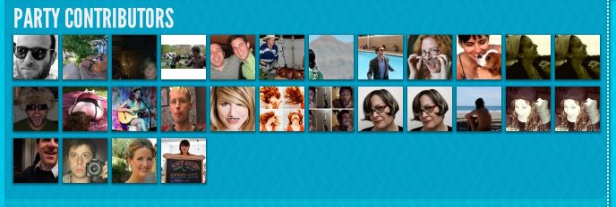

Node.js/MongoDB Hacker

UserSchema.plugin(filter, {
readFilter: {
"owner" : ['name', 'address', 'fb.id', 'fb.name', 'readOnlyField'],
"public": ['name', 'fb.name']
},
writeFilter: {
"owner" : ['name', 'address', 'fb.id', 'writeOnlyField']
},
defaultFilterRole: 'public',
sanitize: true // Escape HTML in strings
});
UserSchema.plugin(denormalize, {defaults: ['address', 'transactions', 'tickets'], exclude: 'bankaccount'});
$("#viewport").scrollingShadows(".longTextBox");